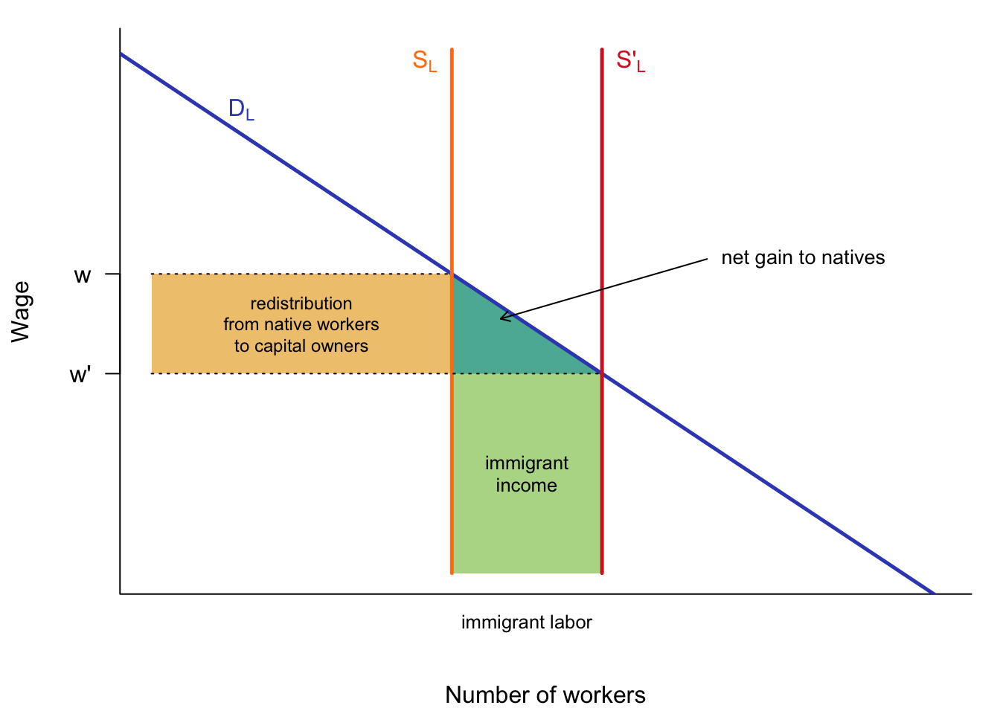
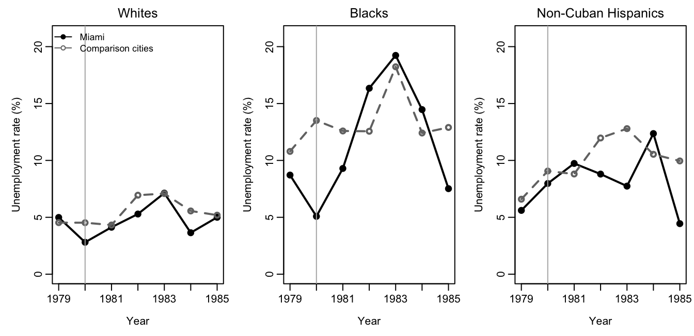

14 Immigration: Who Gains, Who Loses?
Draft: provenance notes (for review)
Margin tags mark material that is not in the course slides or lab. Added · from readings comes from the assigned readings (NRC 1997 and 2016, Card, Peri and Wiltshire, This American Life). Added · new is from outside the course materials (my framing, general knowledge, or my own analysis) and needs the closest check. Untagged material follows the 2025 slides (“Labor Market Consequences of Immigration,” Week 13) and Lab 10 (Mariel).
Added · new Bridge text written for the chapter split.
This chapter looks at immigration from the point of view of the receiving country: its workers, its employers, and its taxpayers. Chapter 15 widens the lens to the biggest winners of all, the migrants themselves, and then looks at what happens when immigrants are removed rather than added.
14.1 Is immigration good or bad for the United States?
The question sounds simple, but as in every chapter of this book, the first step is to ask good for whom? Immigration involves trade-offs between many groups:
- immigrants versus natives;
- skilled versus unskilled natives;
- consumers of “non-tradeable” local goods (haircuts, retail) versus “tradeable” goods (agriculture, manufacturing);
- consumers of market goods versus users of congestible public goods;
- increased tax revenue versus increased public expenses;
- federal finances versus local finances;
- the national labor market versus local labor markets.
This chapter takes these in turn. We start with the labor market, the issue that dominates political debate: do immigrants lower the wages of the native-born?
14.2 A simple model of the labor market
14.2.1 One good, one kind of worker
Start with the simplest possible model:
- the economy produces one good;
- there is one kind of worker;
- the demand curve for labor slopes downward, because it reflects the marginal product of labor;
- the market is competitive, so all workers are paid the marginal product of the last worker hired.
Added · from readings The quotes in this section are from NRC 1997, pp. 136–141, the “first principles” chapter.
The National Research Council’s 1997 report The New Americans, written by a panel of economists and demographers for Congress, starts in exactly this way. It begins with a point that is easy to forget: “Whether native-born Americans gain or lose, immigration most directly affects the welfare of immigrants themselves. Immigrants come with the expectation that they will gain from immigration. If they had not felt that they would gain, they were free not to immigrate.” We return to the migrants’ own gains at the end of the chapter.
Figure 14.1 shows the model. The demand curve \(D_L\) gives the wage firms will pay for each number of workers. Native workers supply a fixed amount of labor (the vertical line \(S_L\)), so the wage is \(w\). The total wage bill is the rectangle under \(w\); everything above it and below the demand curve goes to the owners of capital (or, in the NRC’s version, to skilled workers who complement the unskilled).
Now immigrants arrive, shifting labor supply to \(S'_L\). The wage falls to \(w'\).
Three things happen:
- Immigrants earn the new wage \(w'\) on their labor, the light green rectangle.
- Income is redistributed among natives. Native workers now earn \(w'\) instead of \(w\), a loss equal to the orange rectangle. That same rectangle is a gain to the owners of capital, who now pay less for labor.
- Natives as a whole come out ahead. The new workers produce more than they are paid. The extra output, the small dark green triangle, goes to natives.
In their own words
“There is a direct correspondence between the fact that some domestic workers suffer wage reductions and the fact that we gain as a nation. This wage reduction is, in fact, the reason that the nation as a whole gains from immigration. This simple point is often lost in the voluminous empirical literature, which searches long and hard to find those native-born Americans who experience wage reductions that are then labeled the ‘cost’ of immigration.” (NRC 1997, pp. 140–141)
The NRC draws out a striking implication: “It is only because immigrants and native workers differ from one another that immigration yields a net national gain.” If immigrants were exactly like natives, with the same skills and bringing along the same capital per worker, everything would simply scale up and no one already here would gain or lose.
14.2.2 Substitutes and complements
Workers who do the same jobs as immigrants are substitutes for them. The NRC’s homely example: red apples and green apples are near-perfect substitutes, so more red apples lower the price of green apples too. Workers whose jobs are made more productive by immigrants are complements. Think of supervisors and production workers: “for every 50 production workers, we need one supervisor. If we increase the number of production workers, we will need more supervisors and their wages will rise.” The rule: more immigrants lower the incomes of factors that compete with them and raise the incomes of factors that complement them.
14.2.3 How big is the net gain?
Suppose there are 10 natives for every migrant and the wage falls by \(\Delta w = w - w'\). Then the redistribution from native workers to capital is \(10 \times \Delta w\) per migrant, while the net gain is a triangle of base 1 and height \(\Delta w\), or \(\frac{1}{2}\Delta w\) per migrant. The ratio of net gain to redistribution is \(\frac{1}{2}/10 = 5\) percent.
Added · from readings NRC 1997, p. 140.
The NRC makes the same point in words: the redistribution rectangle is proportional to the number of domestic workers, while the gain triangle is proportional to the (much smaller) number of immigrants, and is a triangle to boot. “The potential size of this redistribution among the native-born compared with the size of the net national gain is one reason why our national political debate stirs such strong emotions.”
14.2.4 What the simple model says
If the simple model is right, immigration:
- creates a net gain for the native-born;
- but reduces the wages of workers who compete with immigrants;
- and sends the gain to capitalists, to complementary (skilled) workers, and to consumers, through lower prices produced by cheaper labor.
It is good to be a complement and, at least from a wage perspective, not good to be a substitute. The size of the effect depends on how steep the demand curve for unskilled labor is and on how much immigration there is.
A political-economy comment: if the simple model is right, the net gains are small compared with workers’ losses, and also small compared with capitalists’ gains. That may explain why the “net gains” story does not convince many people.
Added · from readings NRC 1997, pp. 231–235.
The consumer gains are real but spread thin. The NRC traced the immigrant labor embedded in what American households buy. Immigrant labor accounted for about 4.9 percent of household consumption spending, a share that was “remarkably constant over most of the household income distribution.” It was highest in household services (18.2 percent of costs), services to dwellings (13.5 percent), and laundry and garment services (10.9 percent). Households that hire nannies, gardeners, and housecleaners benefit most.
14.3 The empirical evidence
14.3.1 How to study the question
The model predicts that wages of competing workers fall. Do they? Studying this is harder than it looks:
- Cross-sectional studies of small areas compare places with more and fewer immigrants. This is not a good design, because immigrants choose where to go, and they go to places with strong labor markets.
- Natural experiments look for inflows of immigrants that happened for reasons unrelated to local labor markets: the Mariel boatlift and Miami wages, the influx of meat processors into Alabama, or enforcement actions and deportations.
The broad finding is that the effects are small. The effect on natives is near zero for all kinds of labor. There is some evidence that the latest immigrants are hurt by the newest arrivals: Grossman finds that a 10 percent increase in immigrants reduces the wages of earlier immigrants by 2 percent, and Card finds the same increase reduces earlier immigrants’ wages by 4 percent in Miami.
| Study | Impact on | Elasticity |
|---|---|---|
| Altonji and Card | Less-skilled natives | +0.01 |
| Bean et al. | Black men | ≈ 0 |
| Borjas | White native men | −0.01 |
| Black native men | +0.02 | |
| Grossman | All natives | −0.02 |
| LaLonde and Topel | Young black natives | −0.06 |
Added · from readings NRC 1997, pp. 228–236, and NRC 2016, highlights.
The NRC’s 1997 panel reached the same conclusion: “immigration has only a small adverse impact on the wage and employment opportunities of competing native-born groups.” Over the two decades before the report, it estimated, immigration lowered the wages of high school dropouts by about 5 percent. That group, the panel noted, was shrinking: by 1995, high school dropouts were less than 10 percent of the American workforce. And “ironically, the one group that appears to suffer substantially from new waves of immigrants are immigrants from earlier waves.”
The 2016 update by the National Academies came to similar conclusions: “When measured over a period of 10 years or more, the impact of immigration on the wages of native-born workers overall is very small. To the extent that negative impacts occur, they are most likely to be found for prior immigrants or native-born workers who have not completed high school.” It also found “little evidence that immigration significantly affects the overall employment levels of native-born workers.”
Not every economist agrees on the magnitudes. As the readings note, George Borjas has argued that studies comparing cities miss effects that spread across the whole country, and that national-level analyses find larger wage losses for workers who compete directly with immigrants. Others, such as Ottaviano and Peri, find small or even positive effects using similar national data. The debate is mainly about how close substitutes immigrants and natives really are.
14.3.2 The Mariel boatlift
Added · from readings Card 1990, pp. 245–257. The numbers in this subsection are from the paper.
The most famous natural experiment in the economics of migration was studied by Berkeley’s own David Card. On April 20, 1980, Fidel Castro declared that Cubans who wished to leave for the United States were free to go from the port of Mariel. From May to September 1980, about 125,000 Cubans arrived in Miami on a flotilla of privately chartered boats. About half settled permanently in Miami, raising Miami’s labor force by 7 percent and its number of Cuban workers by 20 percent. Most of the new arrivals had little education: 56.5 percent had not attended high school.
The timing of this influx had nothing to do with Miami’s labor market. That is what made it a natural experiment. If immigration lowers the wages of competing workers, it should have shown up here, especially for less-skilled workers and for earlier Cuban immigrants.
Card compared Miami with four cities chosen because their economies had grown much like Miami’s but which received few Mariel immigrants: Atlanta, Houston, Los Angeles, and Tampa–St. Petersburg. A comparison group is essential. Miami’s unemployment rate did rise, from 5.0 percent in April 1980 to 7.1 percent in July. But state and national unemployment rose at the same time, and a deep national recession followed in 1981–82.
Figure 14.2 replicates Card’s comparison using the Current Population Survey data from the lab.
Show the R code
groups <- c(whites = "Whites", blacks = "Blacks", hispanics = "Non-Cuban Hispanics")
m <- mariel$smsa == "Miami"
ue_m <- tapply(mariel$esr[m], list(mariel$ethrace[m], mariel$year[m]), ue_rate)
ue_c <- tapply(mariel$esr[!m], list(mariel$ethrace[!m], mariel$year[!m]), ue_rate)
yrs <- 1979:1985
op <- par(mfrow = c(1, 3), mar = c(4, 4, 2, 0.6), mgp = c(2.3, 0.6, 0))
for (g in names(groups)) {
plot(yrs, 100 * ue_m[g, ], type = "o", pch = 19, lwd = 2, ylim = c(0, 21),
xlab = "Year", ylab = "Unemployment rate (%)", main = groups[g],
font.main = 1)
lines(yrs, 100 * ue_c[g, ], type = "o", pch = 1, lwd = 2, lty = 2, col = col_grey)
abline(v = 1980, col = "grey70")
if (g == "whites") legend("topleft", c("Miami", "Comparison cities"),
lty = c(1, 2), pch = c(19, 1), col = c("black", col_grey),
bty = "n", cex = 0.85)
}
par(op)
There is no sign that the boatlift raised the unemployment of whites or non-Cuban Hispanics in Miami relative to the comparison cities. Black unemployment in Miami does spike in 1982–83, but the spike came two years after the boatlift, when the recession hit hardest, and Hispanics, who were presumably closer substitutes for the Cuban arrivals, show no such jump. Card concluded that the Mariel immigration “had essentially no effect on the wages or employment outcomes of non-Cuban workers in the Miami labor market,” and “perhaps even more surprising, … no strong effect on the wages of other Cubans.”
How could a 7 percent increase in the labor force have so little effect? Card offered three explanations:
- Displaced migration. Miami’s population growth slowed after the boatlift. Fewer people from elsewhere in the United States moved to Miami than would have otherwise, so the Mariel arrivals may have taken the place of migrants who never came.
- Industry structure. Miami had absorbed waves of Cuban immigrants for two decades. Its economy had a large textile and apparel sector built on less-skilled immigrant labor, so new arrivals could take unskilled jobs as earlier immigrants moved up.
- Language. In a city where so many people spoke Spanish, the Mariel arrivals’ lack of English mattered less.
Card was careful to add that Miami “is far from typical of other local labor markets in the United States.”
In the lab
In Lab 10 you replicate Card’s analysis yourself, then extend it by looking at workers with different levels of education. The lab closes with short questions on how immigrants might benefit native workers, how recent immigrants differ from earlier ones, and fiscal effects at different levels of government. Ask yourself as you work: Which group of natives should be most affected if the simple model is right? What would that look like in the data?
14.3.3 Albertville, Alabama
Added · from readings Details in this subsection are from This American Life, episode 632 (“Our Town, Part One”), and from Peri and Wiltshire’s report. Note: your 2025 calendar lists Part Two as episode 632; it is episode 633 (slide 17 has it right).
A more recent natural experiment comes from a small poultry-processing town in northern Alabama. In 1990, Albertville, population about 15,000, was 98 percent white. Then a wave of thousands of migrants, mostly from Mexico, arrived to work in the chicken plants. They were pushed by recession in Mexico (the peso crashed in 1994) and pulled by booming U.S. demand for chicken. Within 20 years the town had about 6,000 newcomers and was more than a quarter Latino. The radio program This American Life spent eight months there in 2017. It went because Senator (later Attorney General) Jeff Sessions had pointed to towns like Albertville to argue that immigrants pull down American wages: “big greedy businesses who hire illegal workers … will pull down the wages of American citizens.”
The program commissioned the economist Giovanni Peri to find out. With Justin Wiltshire, Peri compared the commuting zone containing Albertville with a “synthetic control”: an average of three other Alabama labor markets that, before 1990, looked like Albertville in immigrant share, wages, and employment of less-educated workers, but did not receive many immigrants afterward. The divergence after 1990 was dramatic. Among workers without a high school diploma, the immigrant share of employment rose from 0.4 percent to 28 percent in Albertville’s labor market, but only from 1 to 12 percent in the control.
What happened to native workers?
- Employment of native high school dropouts showed no marked difference from the control.
- Wages of native dropouts grew about $23 a week less than in the control from 1990 to 2010, about 7 percent. But Albertville had already been on a slightly slower wage path before 1990, and “no clear change was seen after 1990.” Peri warned the radio program that $23 a week was “the very most” the immigrants might have cost, with a big margin of error.
- Wages in the animal-slaughtering industry itself, where the poultry plants are, grew slightly faster than in the control, about $12 a week.
- More-educated natives may have been slightly helped.
Peri and Wiltshire concluded that “there does not seem to be very much evidence of negative wage or employment effects of immigrants on natives. Immigrants not only bring labor but also local demand, and often they work in jobs differentiated from those of natives.”
Added · new Peri and Wiltshire’s report is internally inconsistent: the immigrant share of the population rose “by a factor of six” in the text but “by a factor close to 10” in the conclusions.
The radio program also showed why many longtime workers saw things differently. Pat, who had worked at her plant for 44 years, earned $11.95 an hour; had her starting wage kept up with inflation, she would have earned about twice as much. Workers watched the plants fill with Latino workers who lined up for job applications at 2 a.m., who were reluctant to join the union, and whom managers seemed to prefer. By the union’s records, membership at one plant fell from about 95 percent in 1991 (a figure the company disputes) to the mid-40s today. The jobs immigrants created around town, renting apartments, buying groceries and gas, were invisible from inside the plant. And as the program noted, the main forces behind stagnating wages for workers like Pat (automation, trade, a low minimum wage, and the decline of unions) were national, affecting places with few immigrants as well. Pat’s own verdict on the $23: “You cannot fault a person for wanting a job to feed their family.”
14.4 Why is there so little effect?
The simple model predicts falling wages. The evidence mostly finds small effects. Why?
- The demand curve may be almost flat, perhaps because there are many complementary sectors that expand as labor becomes available.
- Labor markets are not local. People who are hurt may move away and not be observed. This is a potential problem of study design.
Added · from readings NRC 1997, pp. 228–230.
The NRC found suggestive evidence of the second mechanism. Before 1970, the share of native-born Americans living in California rose rapidly, from 6.9 to 9.6 percent between 1950 and 1970. After immigration to California surged, the native share stopped rising; nearly all of California’s growth in the 1970s and 1980s came from immigrants. One interpretation is that immigration “encouraged natives to stop moving there, and this process effectively dispersed the labor market effects of immigration from California to the national economy.” The panel noted that estimated wage effects tend to get larger as the geographic area studied gets larger: smallest across cities, larger across states, larger still across regions.
14.4.1 Advantages and problems of the simple model
The simple model has real strengths. It explains why, historically, workers have tended to oppose more immigration and capitalists to favor it. Its net gain, like the gains from comparative advantage in trade, explains why economists tend to favor open borders. And the size of the redistribution compared with the net gain helps explain the intensity of political conflict.
But we don’t see much decline in wages. Either all the studies are wrong, or the simple model is wrong. Perhaps immigrant and native workers are complements rather than substitutes; perhaps immigrants increase local demand.
Other considerations:
- Studies of rapid changes may not tell us much about the long-term steady state: a society with high versus low immigration.
- Immigrants bring innovation and entrepreneurship.
- They bring capital (Solow effects).
- There are global effects, on immigrants themselves and on the countries they leave.
My conclusion, in lecture, is that the net effects of migration on native workers appear to be very small. Perhaps there is an asymmetry in perception between winners and losers: those who are worse off blame migration, while those who are better off have a more diffuse explanation. Or perhaps anti-immigration sentiment is driven largely by psychology and cultural issues, not economics.
14.5 Does immigration raise or lower taxes?
Added · from readings This section is drawn from the readings for the guest lecture on fiscal effects (Dr. Gretchen Donehower), for which no slides were available: NRC 1997, ch. 7; NRC 2016; This American Life, episode 633.
The second big economic question about immigration is fiscal. Immigrants pay taxes and use government services. Do they pay their way?
14.5.1 Snapshots versus lifetimes
The simplest approach is a snapshot: in a given year, add up the taxes paid and the benefits received by immigrants. The NRC’s 1997 panel did this for 1994 and found that the average immigrant paid about $1,800 more in taxes than they received in benefits, because immigrants are concentrated at working ages. But this counts immigrants’ U.S.-born young children as natives. Add those children, who are expensive to educate, and the immigrant household’s balance was about −$370 a year. Meanwhile the adult children of immigrants, who no longer live in immigrant-headed households, had a positive balance. So snapshot estimates for immigrant-headed households “are biased toward negative numbers.”
The NRC panel argued that the right question is forward-looking: if one more immigrant arrives today, what is the present value of all the taxes they and their descendants will pay, minus all the costs they will impose, at every level of government, far into the future? That calculation rests on age profiles of taxes and benefits, and a striking pattern emerges: everyone is a net recipient in childhood (schools) and old age (Social Security and Medicare), and a net payer during the working years. The big difference between immigrants and natives, the panel found, “lies in taxes rather than in benefits”: benefits by age look quite similar, but immigrants, with less education on average, earn less and pay less tax at each age.
| Less than high school | High school | More than high school | All immigrants | |
|---|---|---|---|---|
| Immigrant plus descendants | −13 | +51 | +198 | +80 |
| Immigrant’s own lifetime | −89 | −31 | +105 | −3 |
| Descendants only | +76 | +82 | +93 | +83 |
The average new immigrant, with descendants, had a positive fiscal impact of about +$80,000, but this average hides three important patterns:
- Education matters enormously. Immigrants with more than a high school education were worth about +$198,000; those with less than high school, about −$13,000.
- Descendants matter. Over their own lifetimes, immigrants with little education cost more than they paid. But their children, who on average get much more education than their parents, paid in far more, for every education group.
- Federal and local levels pull in opposite directions. At the federal level the average immigrant was worth about +$105,000; at the state and local level, about −$25,000. State and local governments pay for schooling up front and recoup only part of the later tax payments, while the federal government collects taxes first and pays pensions and health care decades later. And “although the positive impact at the federal level is shared evenly by the U.S. population, the negative state and local impact is highly concentrated in a few states.”
The panel was candid about uncertainty: “there are other sets of plausible assumptions … that are by no means implausible and would produce negative fiscal impacts of immigrants.” And it put the stakes in perspective. Adding 100,000 immigrants a year would change the average resident’s taxes by about $30 a year: a $40 gain at the federal level and a $10 cost at the state and local level.
The 2016 National Academies report confirmed the broad picture: immigrants are more costly to state and local governments, “in large part due to the costs of educating their children,” while “the children of immigrants (the second generation) are among the strongest economic and fiscal contributors in the U.S. population.”
14.5.2 Albertville’s accounts
This American Life asked what all this meant for one town. Undocumented workers in the poultry plants, the program found, pay sales and property taxes and, through payroll deductions, income and Social Security taxes, but mostly cannot collect benefits. The Social Security Administration estimated that in 2010 undocumented workers paid about $13 billion into the Social Security trust fund and received about $1 billion. Their biggest cost to government is schools. Economists at the Urban Institute estimated that non-Latino taxpayers in Albertville pay about $272 a year in local taxes for the extra children immigrant families enrolled. Food-stamp use in the county doubled, from 8 to 16 percent, but rose even faster, from 11 to 26 percent, in the rest of Alabama, where there were few immigrants. Dr. Donehower calculated for the program that an undocumented poultry worker without a high school diploma, with children and grandchildren, would cost federal, state, and local governments about $21,000 over 75 years. To put that number in context, a native-born American without a high school education costs “hundreds of thousands of dollars more.”
14.6 Key ideas
- In a simple one-sector model, immigration lowers the wages of competing workers, redistributes income to capital owners and complementary workers, and creates a small net gain for natives. The redistribution is large compared with the net gain.
- Immigrants who are substitutes for natives lower their wages; immigrants who are complements raise them. Gains arise only because immigrants differ from natives.
- Natural experiments like the Mariel boatlift and Albertville find small effects on native wages and employment. The workers most affected are earlier immigrants and natives without a high school diploma.
- Possible reasons: flat demand curves, complementarity, immigrants’ own demand, and native workers moving elsewhere.
- Fiscal effects depend on education, age at arrival, descendants, and level of government: positive on average at the federal level, negative at the state and local level.
14.7 Check your understanding
Added · new These questions are new. Q5 is the question your calendar poses for the radio episode. They avoid the lab’s graded education analysis, and (since the 2025 lab added a graded question on federal versus state fiscal effects) the former question on that topic was replaced.
Redistribution versus gain. In the simple model, suppose there are 20 natives for every immigrant. What is the ratio of the net gain to natives to the redistribution among natives? What does this suggest about the politics of immigration?
No wage effect, no gain? The NRC argues that if immigration did not lower anyone’s wage, natives as a whole would not gain. Explain why, using Figure 14.1.
Comparison groups. Miami’s unemployment rate rose after the Mariel boatlift. Why doesn’t this show that the boatlift raised unemployment? What makes a good comparison city?
Counting descendants. In the NRC’s estimates, immigrants with little education cost more than they paid in taxes over their own lifetimes, but their children paid in far more than they cost. Why? What does this imply about the time horizon you choose when judging the fiscal effects of immigration?
Social Security and the undocumented. Undocumented workers paid about $13 billion into Social Security in 2010 and received about $1 billion. What do you think of this as an argument about the fiscal effects of immigration? What is left out?
14.8 Further reading
- National Research Council. 1997. The New Americans: Economic, Demographic, and Fiscal Effects of Immigration. J. P. Smith and B. Edmonston, eds. National Academy Press. Pages 135–142 (“First Principles”), 228–239 (empirical evidence), and 297–354 (selected pages on future fiscal impacts). As you read: Why does the panel insist that the national gain and some workers’ losses are two sides of the same coin?
- National Academies of Sciences, Engineering, and Medicine. 2016. “Report Highlights: The Economic and Fiscal Consequences of Immigration.” A four-page summary of the update to The New Americans.
- This American Life. 2017. “Our Town,” Parts One (episode 632; labor market, 43:50–58:00) and Two (episode 633; fiscal costs). Transcripts online. As you read: What do you think of the discussion of Social Security taxes and benefits for the undocumented?
- Peri, Giovanni, and Justin Wiltshire. 2017. “Analysis of Marshall-DeKalb Area, Relative to Similar Labor Markets in Alabama, 1980–2010.” Report for This American Life.
- Card, David. 1990. “The Impact of the Mariel Boatlift on the Miami Labor Market.” Industrial and Labor Relations Review 43(2): 245–257. Linked in the lab; read at least pp. 245–251 and 255–257.